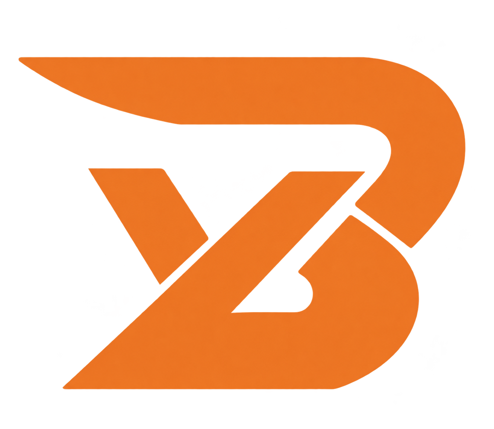

A / 金色 · 细黑边（已选定） 延续原有品牌
暖白背景 / 页头
ZHONGYE.MODULAR BRIDGE SOLUTIONS
石墨灰背景 / 深色区域
ZHONGYE.MODULAR BRIDGE SOLUTIONS
已选定：保留金色主体与原标志感觉，使用均匀细黑边与顺滑轮廓。
查看金色版网页 →保持暖白、石墨灰和橙色按钮不变，只比较 Logo 的颜色。版本1已保存，线上网站暂不更改。
已选定：保留金色主体与原标志感觉，使用均匀细黑边与顺滑轮廓。
查看金色版网页 →
工业橙色与按钮、项目数字强调色呼应，视觉更鲜明，整体配色更统一。
查看橙色版网页 →建议：优先保留金色 Logo，橙色继续用于按钮和少量重点，既保留原有识别，也能延续当前网页风格。